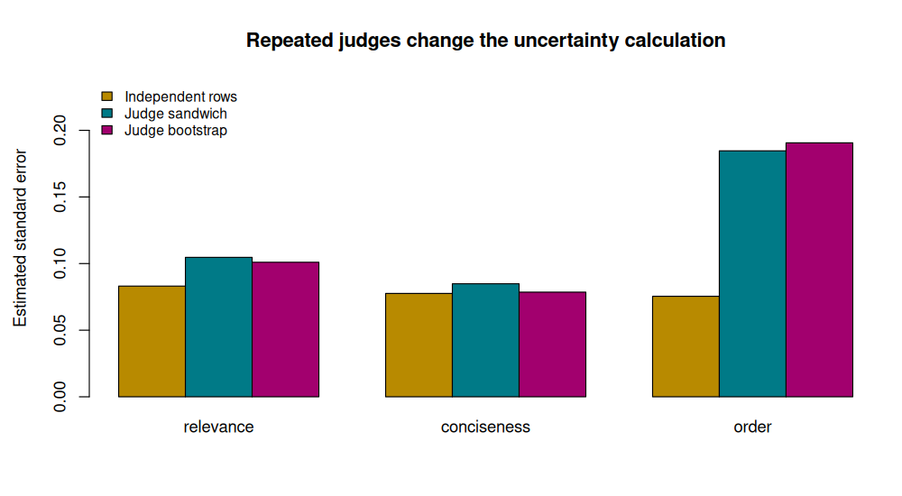

7. Contextual preferences, judges, and reward learning#
Question. Whose preference is being learned, in which context, and with what uncertainty?
A single strength per item can be inadequate when the same answer is helpful for one question and inappropriate for another. Contextual preference learning models comparisons conditional on information about the task and the alternatives. Its statistical challenge includes both the predictive model and the mechanism that generates the comparisons.
This chapter extends paired comparisons, handles repeated judges carefully, and derives a finite-action connection to direct preference optimization. It does not require language-model training.
7.1 · A contextual comparison model#
Let \(x\) denote a context and \(a,b\) two alternatives. Define their feature difference
A linear utility model gives
The target might be this conditional probability, a coefficient contrast, or the decision rule selecting the alternative with largest predicted utility. These targets require different evaluations. Pairwise prediction accuracy alone does not establish a correct global ranking or factual reliability.
For observed labels \(Y_r\) and differences \(d_r\), the negative log likelihood is
This is ordinary logistic loss on feature differences. An item-independent utility intercept cancels, and covariates that never vary within a comparison provide no contrast information. Identification requires sufficient variation in the observed differences; separation remains possible.
7.2 · Presentation and sampling matter#
Suppose \(h=1\) when alternative \(a\) is displayed first and \(h=-1\) when it is displayed second. A model with an order effect is
Randomizing presentation helps separate an order effect from content features. It does not make all preference labels objective or remove systematic judge disagreement. Similarly, if comparisons are collected only for close alternatives, the training comparison distribution differs from a deployment distribution containing many easy pairs. State the evaluation population and ensure that the held-out sample represents it, or justify a weighting adjustment.
Example 7.1 · Relevance and conciseness can disagree
Setup. A has one more unit of relevance and two fewer units of conciseness than B. The hypothetical coefficients are \(\beta=(1.2,0.3)\).
Work it through. The utility contrast is \(1.2-2(0.3)=0.6\), so the predicted preference probability is \(\sigma(0.6)=0.646\). If the order effect is \(\delta=0.4\), displaying A first changes the model probability to \(\sigma(1.0)=0.731\); displaying it second gives \(\sigma(0.2)=0.550\).
What this shows. A reported preference rate can reflect both content and presentation. A preferred answer can still contain a factual error: the outcome here measures a judge’s comparison, not an independently verified truth label.
7.3 · Repeated judges are not independent rows#
If judge \(j\) evaluates several pairs, their responses can share a latent preference, expertise level, or order bias. One possible conditional model is
Here \(b_j\) represents judge-specific order sensitivity. Integrating out \(b_j\) generally does not preserve the same logistic regression coefficients. A pooled logistic fit can instead be understood as a working marginal model, with a population projection target determined by its expected loss. Distinguish this target from the conditional generating coefficient.
For independent judges with repeated observations, a cluster sandwich estimator uses summed score contributions \(U_j\):
Its justification needs enough independent clusters and suitable regularity. It is not an exact small-sample guarantee. A judge bootstrap resamples whole judges, preserving their within-judge observations. Resampling individual comparison rows would destroy that structure.
Example 7.2 · Eight hundred rows need not mean eight hundred independent measurements
Setup. Forty judges each supply twenty responses. For a simple scalar mean, suppose responses within each judge have equal variance and common correlation \(\rho=0.15\).
Work it through. The variance inflation relative to independent rows is \(1+(20-1)\rho=3.85\). The corresponding effective sample size for this particular mean calculation is \(800/3.85\approx208\).
What this shows. The number of independent judges matters. This effective-sample-size formula is an illustrative exchangeable-mean calculation, not a universal replacement sample size for every logistic coefficient or crossed judge–prompt design.
When both prompts and judges repeat, dependence can be crossed. A one-way judge bootstrap may then be insufficient. The independent unit for validation and resampling must match the target population. For adaptive pair selection or stopping, inference must additionally be justified under that sequential sampling scheme; ordinary independent-row standard errors are not automatically valid.
7.4 · From preference likelihood to a policy#
For a fixed context, let \(\pi_0(a)>0\) be a reference distribution over finitely many actions. Given rewards \(r(a)\), consider
A Lagrange multiplier for \(\sum_a\pi(a)=1\) gives
Under a Bradley–Terry reward comparison, the common \(\log Z\) cancels. The preference probability becomes a logistic function of the difference between two policy/reference log ratios. Replacing \(\pi^*\) with a fitted policy and minimizing the resulting negative log probability gives the central DPO objective.
The identity depends on the reward-comparison model, positive reference support, and the KL-regularized optimization setup. It does not establish that the labels are unbiased, that a restricted fitted policy reaches the optimum, or that preference alignment guarantees factual correctness. This can be an offline preference-learning problem: collecting a fixed comparison dataset does not itself make the analysis online learning.
Design the holdout around the intended generalization#
Predicting new comparisons from familiar judges is different from predicting preferences of new judges. Likewise, a new answer pair for a familiar prompt is different from an entirely new prompt. Choose the holdout unit to match the intended deployment: rows, judges, prompts, or a combination.
If both judges and prompts are reused, the dependence structure is crossed. A judge-only bootstrap does not automatically capture prompt-level dependence, and a prompt-only bootstrap does not automatically capture judge effects. The simple one-cluster analysis in the lab illustrates a particular sampling model; an application with crossed reuse needs a corresponding design and uncertainty analysis.
7.5 · Execute the judge and policy experiment#
The R lab simulates independent judges with repeated responses and heterogeneous order effects. It fits a working logistic model and compares independent-row, judge-sandwich, and judge-bootstrap standard errors. The conditional simulation coefficients are deliberately not treated as the exact targets of the marginal working model. The final calculation verifies the finite-action policy identity numerically.
Code
# Chapter 7: uncertainty with repeated judges, using only base R.
set.seed(2026102107)
options(width = 100)
J <- 40L
m <- 20L
n <- J * m
judge <- rep(seq_len(J), each = m)
relevance <- rnorm(n)
conciseness <- rnorm(n)
order <- sample(c(-1, 1), n, replace = TRUE)
judge_order_bias <- rnorm(J, 0, 1.1)
eta <- 1.1 * relevance + 0.35 * conciseness +
(0.45 + judge_order_bias[judge]) * order
dat <- data.frame(y = rbinom(n, 1, plogis(eta)), relevance, conciseness, order, judge)
fit <- glm(y ~ 0 + relevance + conciseness + order, family = binomial(), data = dat)
X <- model.matrix(fit)
mu <- fitted(fit)
residual_score <- X * (dat$y - mu)
cluster_score <- rowsum(residual_score, dat$judge, reorder = FALSE)
bread <- solve(crossprod(X, X * as.vector(mu * (1 - mu))))
p <- ncol(X)
correction <- (J / (J - 1)) * ((n - 1) / (n - p))
cluster_cov <- correction * bread %*% crossprod(cluster_score) %*% bread
B <- 150L
boot <- matrix(NA_real_, B, length(coef(fit)))
for (b in seq_len(B)) {
sampled_judges <- sample.int(J, J, replace = TRUE)
idx <- unlist(lapply(sampled_judges, function(j) which(dat$judge == j)),
use.names = FALSE)
f <- suppressWarnings(glm(y ~ 0 + relevance + conciseness + order,
family = binomial(), data = dat[idx, ]))
if (f$converged && all(is.finite(coef(f)))) boot[b, ] <- coef(f)
}
ok <- complete.cases(boot)
out <- cbind(estimate = coef(fit), iid_se = sqrt(diag(vcov(fit))),
judge_sandwich_se = sqrt(diag(cluster_cov)),
judge_bootstrap_se = apply(boot[ok, , drop = FALSE], 2, sd))
cat("Working logistic model with repeated observations from each judge:\n")
print(round(out, 4))
cat("\nBootstrap usable/flagged replicates:", sum(ok), "/", sum(!ok), "\n")
cat("The working coefficients summarize a marginal logistic approximation.\n")
cat("They need not equal the conditional coefficients used to generate the data.\n")
cat("Judge-level resampling assumes independent judges; it is not a two-way bootstrap.\n")
# A finite-action illustration of the KL-regularized preference identity.
ref <- c(.5, .3, .2)
reward <- c(0, .4, 1)
tau <- .7
policy <- ref * exp(reward / tau)
policy <- policy / sum(policy)
pair <- c(3L, 1L)
reward_probability <- plogis(reward[pair[1]] - reward[pair[2]])
ratio_probability <- plogis(tau *
(log(policy[pair[1]] / ref[pair[1]]) - log(policy[pair[2]] / ref[pair[2]])))
cat("\nFinite-action policy and reference probabilities:\n")
print(round(data.frame(action = 1:3, reference = ref, policy), 4))
cat("Preference probability from rewards / policy log ratios:\n")
print(round(c(reward = reward_probability, log_ratio = ratio_probability), 6))
stopifnot(abs(reward_probability - ratio_probability) < 1e-12)
figure_dir <- Sys.getenv("COURSE_FIGURE_DIR", "")
if (nzchar(figure_dir)) {
dir.create(figure_dir, recursive = TRUE, showWarnings = FALSE)
png(file.path(figure_dir, "07-contextual-preferences.png"),
width = 1000, height = 550, res = 110)
par(mar = c(5, 4.5, 4, 1))
se_values <- t(out[, c("iid_se", "judge_sandwich_se", "judge_bootstrap_se")])
barplot(se_values, beside = TRUE, col = c("#B88A00", "#007A87", "#A2006E"),
ylim = c(0, 1.25 * max(se_values)), ylab = "Estimated standard error",
main = "Repeated judges change the uncertainty calculation",
legend.text = c("Independent rows", "Judge sandwich", "Judge bootstrap"),
args.legend = list(x = "topleft", bty = "n", cex = .85))
invisible(dev.off())
}
Output
Working logistic model with repeated observations from each judge:
estimate iid_se judge_sandwich_se judge_bootstrap_se
relevance 0.6684 0.0831 0.1047 0.1010
conciseness 0.3127 0.0776 0.0848 0.0786
order 0.2026 0.0754 0.1846 0.1906
Bootstrap usable/flagged replicates: 150 / 0
The working coefficients summarize a marginal logistic approximation.
They need not equal the conditional coefficients used to generate the data.
Judge-level resampling assumes independent judges; it is not a two-way bootstrap.
Finite-action policy and reference probabilities:
action reference policy
1 1 0.5 0.2680
2 2 0.3 0.2847
3 3 0.2 0.4473
Preference probability from rewards / policy log ratios:
reward log_ratio
0.731059 0.731059


7.6 · Exercises#
Explain why adding a constant feature to every alternative does not identify an absolute utility intercept.
Change the standard deviation of the judge-specific order effects to zero and then increase it. Which standard errors change most? Interpret the result without assuming that a working coefficient equals the conditional generating coefficient.
Derive the KL-regularized optimizer and explain why the normalizing constant cancels in a comparison at the same context.
Design a train/test split for a dataset containing repeated judges and repeated prompts. State whether your target is performance on new prompts, new judges, or both; identify which dependence remains.
Worked solutions
1. A common feature subtracts to zero in \(\phi(x,a)-\phi(x,b)\). The observations contain information about relative utility only. A normalization or prior cannot turn this into observed absolute utility.
2. Order-effect uncertainty is especially sensitive because the simulation places a shared random effect on that slope. Changes in other coefficients depend on the design. The three estimators answer an uncertainty question for the fitted working model; none corrects its interpretation into a conditional mixed-model coefficient automatically.
3. Differentiating with respect to \(\pi(a)\) gives \(r(a)-\tau\{\log(\pi(a)/\pi_0(a))+1\}+\lambda=0\). Exponentiate and normalize. The same context has the same \(Z\), so subtracting rewards removes it. Comparing policies across contexts does not permit cancellation of unrelated normalizers in the same way.
4. A new-prompt target requires held-out prompts; a new-judge target requires held-out judges. To evaluate both, reserve both groups and ensure no shared observations leak through either index. For uncertainty about a crossed population, justify a suitable multiway method rather than automatically resampling rows.
Reading and transition#
Turner and Firth (2012) develops structured paired-comparison models and order effects. Rafailov et al. (2023) gives the DPO formulation. Next, change the learning protocol: decisions must be made before each new outcome is available.